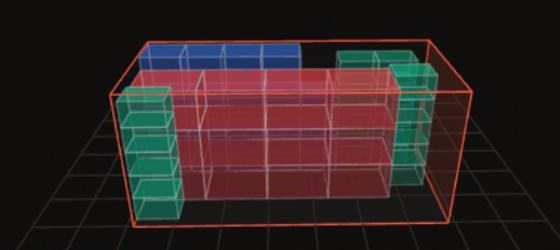
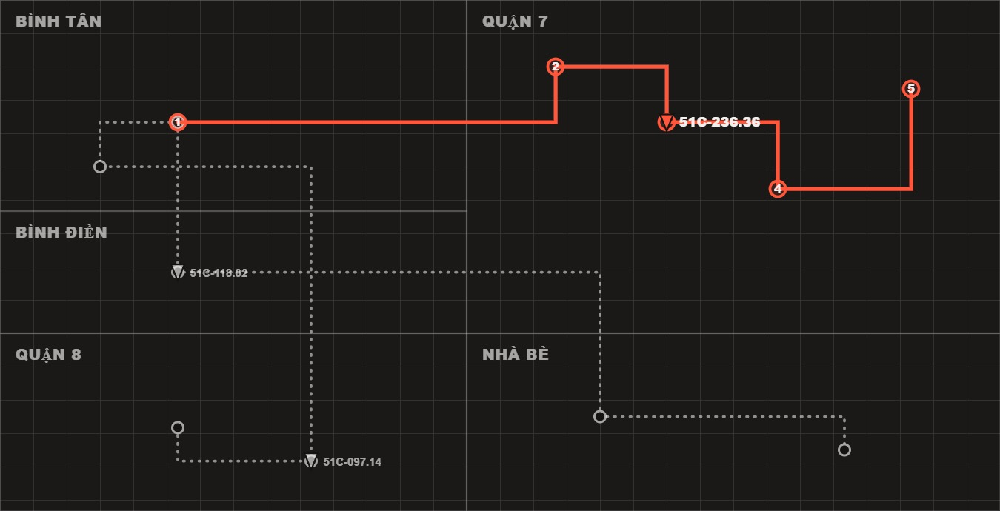
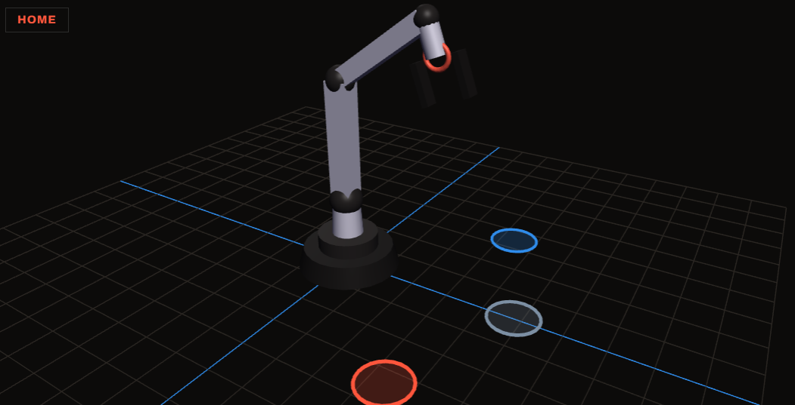

Software Engineering Intern / DeveloperThực tập sinh / Lập trình viên phần mềm
Nguyễn Việt Anh Khoa
khoa@siu:~$flask run --fleet 36
Computer Science student at Saigon International University (SIU), with products already in daily use: a Flask dispatch platform running a 36-truck fleet, an Android app doing on-device plant disease detection, and a robot arm controller written in FastAPI. Comfortable across the full chain — process analysis and requirements gathering through to deployed, tested code. Eight years studying in the US and experience teaching English (IELTS 7.0) support clear documentation and cross-cultural communication.Sinh viên Khoa học Máy tính tại Trường Đại học Quốc tế Sài Gòn (SIU), đã đưa sản phẩm vào sử dụng thực tế: nền tảng điều vận Flask dùng hằng ngày cho đội xe tải 36 chiếc, ứng dụng Android nhận diện bệnh cây chạy trực tiếp trên thiết bị, và bộ điều khiển robot viết bằng FastAPI. Làm được trọn khâu từ phân tích quy trình, thu thập yêu cầu cho tới code đã triển khai và có kiểm thử. Tám năm học tại Mỹ cùng kinh nghiệm dạy tiếng Anh (IELTS 7.0) giúp tôi viết tài liệu rõ ràng và giao tiếp đa văn hoá.
Leaf-disease classes on deviceNhóm bệnh lá nhận diện trên thiết bị
7.0
IELTS Overall
Selected workDự án tiêu biểu
Pick a book to open itChọn một cuốn để mở
Live demosDemo trực tiếp
InteractiveTương tác
Small rebuilds of the interactive pieces from each project above, running on static sample data — no backend. Scroll down to try each one.Bản dựng lại thu nhỏ phần tương tác của từng dự án phía trên, chạy trên dữ liệu mẫu tĩnh — không có backend. Cuộn xuống để dùng thử từng demo.
A mini-rebuild of the truck-load planner inside the fleet platform, using the same Three.js scene setup, door markers and package palette as production. The three trucks are real vehicles from the fleet roster, drawn to their actual cargo dimensions — same shipment, three real trucks, so the capacity difference is the trucks', not the demo's. Pick one, watch it load step by step, drag to orbit, or click a package for its specs.Bản dựng lại thu nhỏ của công cụ xếp hàng 3D trong nền tảng điều vận — cùng cách dựng cảnh Three.js, ký hiệu cửa xe và bảng màu kiện hàng như bản thật. Ba xe này là xe thật trong đội xe, vẽ đúng kích thước thùng thực tế — cùng một lô hàng, ba xe thật, nên khác biệt về sức chứa là do xe chứ không phải do demo. Chọn xe, xem xếp hàng từng bước, kéo để xoay, hoặc bấm vào kiện hàng để xem thông số.
Choose a vehicleChọn xe
Packages placedSố kiện đã xếp
0
Volume usedThể tích sử dụng
0%
Payload usedTrọng tải sử dụng
0%
Drag to orbit · scroll to zoom · click a packageKéo để xoay · cuộn để phóng to · bấm vào kiện hàng
Dispatcher boardBảng điều phối
A rebuild of the dispatch dashboard dispatchers use all day: vehicles on the left, the live map in the middle, and the selected truck's stop timeline on the right. Same layout, colours, statuses and actions (advance, skip, cancel, revert, reorder) as production, running on three sample trucks and a made-up street grid. Click a truck, then work through its stops.Bản dựng lại bảng điều phối mà nhân viên điều phối dùng cả ngày: danh sách xe bên trái, bản đồ ở giữa và timeline điểm dừng của xe đang chọn bên phải. Cùng bố cục, màu sắc, trạng thái và thao tác (xác nhận, bỏ qua, hủy, hoàn tác, đổi thứ tự) như bản thật, chạy trên ba xe mẫu và một sơ đồ đường hư cấu. Chọn một xe rồi thao tác từng điểm dừng.
Fictional street layout, for demo onlySơ đồ đường hư cấu, chỉ phục vụ demo
Robotic armTay robot
The FastAPI backend's sorting state machine, rebuilt client-side with the exact joint order, limits, HOME pose and Grab → Lift → Move → Drop-off sequence from the real controller — same simulation mode the app falls back to with no hardware attached. Jog the joints manually, or hand it a block and watch it sort.Máy trạng thái phân loại của backend FastAPI, dựng lại phía client với đúng thứ tự khớp, giới hạn, tư thế HOME và trình tự Gắp → Nâng → Di chuyển → Thả như bộ điều khiển thật — cùng chế độ mô phỏng khi không có phần cứng. Điều khiển từng khớp bằng tay, hoặc đưa cho nó một khối màu và xem nó phân loại.
HOME
Drag to orbit · scroll to zoomKéo để xoay · cuộn để phóng to
Logistics & Systems Analysis InternThực tập sinh Logistics & Phân tích hệ thống
Thanh Trung Trade & Service Investment JSC (TT Ex-Trans)Công ty CP Đầu tư Thương mại Dịch vụ Thành Trung (TT Ex-Trans)
Documented vehicle dispatch, driver assignment and delivery tracking flows as software requirements.Mô tả luồng điều phối xe, phân công tài xế và theo dõi giao hàng thành tài liệu yêu cầu phần mềm.
Gathered requirements from dispatchers and drivers to specify fleet, fuel and maintenance management features.Thu thập yêu cầu từ điều phối viên và tài xế để đặc tả tính năng quản lý đội xe, nhiên liệu và bảo dưỡng.
Reconciled delivery figures and fuel costs against operational logs, improving reporting accuracy.Đối chiếu số liệu giao hàng và chi phí nhiên liệu với log vận hành, tăng độ chính xác của báo cáo.
02/2021 – 06/2021
Washington English Center
English TeacherGiáo viên tiếng Anh
Washington English Center
Taught adult learners across levels, breaking complex material into clear explanatory steps.Giảng dạy học viên người lớn nhiều trình độ, chia nội dung phức tạp thành các bước giải thích rõ ràng.
Adapted teaching to different language backgrounds and coordinated curriculum with colleagues.Điều chỉnh cách dạy theo nền tảng ngôn ngữ khác nhau và phối hợp giáo trình với đồng nghiệp.
English — fluent, IELTS 7.0Tiếng Anh — thành thạo, IELTS 7.0
EducationHọc vấn
Saigon International University (SIU)Trường Đại học Quốc tế Sài Gòn (SIU)
Exp. 2027Dự kiến 2027
BSc Computer Science — Ho Chi Minh City, VietnamCử nhân Khoa học Máy tính — TP. Hồ Chí Minh, Việt Nam
Montgomery College
2020 – 2022
Associate of Arts — Maryland, USAAssociate of Arts — Maryland, Hoa Kỳ
CertificatesChứng chỉ
IELTS — 7.0 Overall
20/12/2023
7.0
Get in touchLiên hệ
Open to software engineering internships and graduate roles in Ho Chi Minh City or remote.Đang tìm cơ hội thực tập và vị trí lập trình viên tại TP. Hồ Chí Minh hoặc làm việc từ xa.
Your mail client should be opening. If it did not, write to khoa01004@gmail.com directly.Ứng dụng email sẽ mở ra. Nếu không, vui lòng gửi trực tiếp tới khoa01004@gmail.com.
01
Fleet Logistics PlatformNền tảng điều vận đội xe
Truck Load PlannerXếp hàng lên xe
3D bin packing for a working 36-truck fleetXếp hàng 3D cho đội xe 36 chiếc đang vận hành
Nguyễn Việt Anh Khoa

OverviewTổng quan
Which truck, and where each box goesDùng xe nào, và mỗi kiện nằm ở đâu
A module of the fleet platform that picks the truck for a shipment and plans where every package sits inside it, in 3D, with a step-by-step loading order.Một phân hệ của nền tảng điều vận: chọn xe cho lô hàng và tính vị trí của từng kiện bên trong thùng xe theo không gian 3D, kèm thứ tự xếp hàng từng bước.
The problemBài toán
A 3D puzzle with rulesBài toán xếp hình 3D có luật
Every shipment mixes packages of different sizes and weights. Some can't carry anything on top, some only light loads, and every one still has to be reachable from a door.Mỗi lô hàng gồm nhiều kiện khác nhau về kích thước và trọng lượng. Có kiện không được chồng gì lên trên, có kiện chỉ chịu được hàng nhẹ, và kiện nào cũng phải lấy ra được từ một cửa xe.
The fleet runs trucks from 1.5 to 10 tonnes, so the first question is which truck — or how few trucks — a shipment needs.Đội xe có xe từ 1,5 đến 10 tấn, nên câu hỏi đầu tiên là dùng xe nào — hoặc ít nhất bao nhiêu xe — cho lô hàng.
What I builtNhững gì tôi xây dựng
From shipment list to loading orderTừ danh sách hàng đến thứ tự xếp
Vehicle selectionChọn xe — tries the smallest truck that fits everything; if none does, fills the biggest trucks first so fewer are used.thử xe nhỏ nhất chứa được toàn bộ; nếu không xe nào đủ, xếp đầy xe lớn trước để dùng ít xe hơn.
Placement engineBộ máy xếp hàng — scores every candidate position for each package.chấm điểm từng vị trí ứng viên cho mỗi kiện.
Stacking rulesQuy tắc xếp tầng — none / light only / normal per package, with a hard 3-layer cap.không / chỉ hàng nhẹ / bình thường cho từng kiện, giới hạn cứng 3 tầng.
Door accessLối cửa — every package must slide out through the rear door, then the right or left side door.mỗi kiện phải lấy ra được qua cửa sau, rồi đến cửa hông phải hoặc trái.
ViewsGóc nhìn — 3D plus top and rear 2D views, with a step-by-step loading animation.3D cùng góc nhìn 2D từ trên và từ sau, kèm hoạt ảnh xếp hàng từng bước.
Under the hoodBên trong hệ thống
Fifteen tries, keep the bestThử mười lăm lần, giữ lần tốt nhất
Non-stackable packages go first because they need floor space, then the widest ones.Kiện không xếp chồng được đi trước vì cần sàn xe, sau đó đến kiện rộng nhất.
Each arrange runs 5 package orderings × 3 scoring profiles = 15 full passes, and keeps the one that places the most packages.Mỗi lần xếp chạy 5 thứ tự kiện × 3 bộ trọng số = 15 lượt đầy đủ, rồi giữ lượt xếp được nhiều kiện nhất.
The score weighs contact area, finishing the current row, balance across the width, avoiding dead gaps, and low layers over tall towers.Điểm gồm diện tích tiếp xúc, lấp đầy hàng hiện tại, cân bằng theo chiều ngang, tránh khe chết, và ưu tiên tầng thấp hơn cột cao.
A stacked package needs at least 50% of its base supported, its centre over a package below, and heavier packages underneath.Kiện xếp chồng phải được đỡ ít nhất 50% đáy, trọng tâm nằm trên kiện bên dưới, và kiện bên dưới phải nặng hơn.
Tech stackCông nghệ
An engine in Python, a scene in Three.jsBộ máy bằng Python, cảnh 3D bằng Three.js
Python · Flask
the packing engine and its APIbộ máy xếp hàng và API
Three.js
3D view and loading animationgóc nhìn 3D và hoạt ảnh xếp hàng
Canvas 2D
top and rear viewsgóc nhìn từ trên và từ sau
SQLite
shipments, packages and placementslô hàng, kiện hàng và vị trí xếp
pytest
39 tests for scoring, auto-arrange and routes39 test cho chấm điểm, tự xếp và API
py3dbp
an experimental second enginebộ máy thứ hai đang thử nghiệm
OutcomeKết quả
Real trucks, real dimensionsXe thật, kích thước thật
Where 36 trucks are, and which ones need help36 xe đang ở đâu, và xe nào cần xử lý
Nguyễn Việt Anh Khoa

OverviewTổng quan
The screen dispatchers live inMàn hình điều phối viên dùng cả ngày
The part of the fleet platform dispatchers watch all day: every truck on a live map, each truck's stops as a timeline, and the ones that need attention pulled to the top.Phần của nền tảng điều vận mà điều phối viên theo dõi cả ngày: mọi xe trên bản đồ trực tiếp, các điểm dừng của từng xe dạng timeline, và những xe cần chú ý được đưa lên đầu.
The problemBài toán
Four sources, no links between themBốn nguồn dữ liệu, không liên kết với nhau
At Thành Trung, the same truck plate lived in four separate places: vehicle records in an Excel file, the next day's plan in the manager's Google Sheet, delivery photos in each driver's group chat, and GPS on the tracking vendor's portal.Tại Công ty Thành Trung, cùng một biển số xe nằm ở bốn nơi tách rời: hồ sơ xe trên tệp Excel, kế hoạch giao hàng ngày mai trên Google Sheet của quản lý, ảnh chứng từ trong nhóm chat của từng tài xế, và vị trí GPS trên cổng giám sát của nhà cung cấp thiết bị.
None of them referenced the others, so a finished trip couldn't be looked up by machine, and knowing where a truck was meant calling the driver.Không nguồn nào tham chiếu tới nguồn nào, nên một chuyến đã xong không tra lại được bằng máy, và muốn biết xe đang ở đâu thì phải gọi điện cho tài xế.
What I builtNhững gì tôi xây dựng
Everything a stop needs, in one boardMọi thứ cho một điểm dừng, trên một bảng
Stop executionThực thi điểm dừng — advance, skip or cancel with a reason, reorder live, undo from each stop's history.xác nhận, bỏ qua hoặc hủy kèm lý do, đổi thứ tự trực tiếp, hoàn tác theo lịch sử từng điểm.
Attention flagsCờ cảnh báo — stuck at a stop, GPS stale, stopped away from a stop, plus a No GPS filter.kẹt tại điểm dừng, GPS cũ, dừng ngoài điểm giao, cùng bộ lọc Mất GPS.
Current-stop cardThẻ điểm hiện tại — pinned, with click-to-call and road-aware ETA and distance.ghim cố định, bấm để gọi, ETA và quãng đường theo đường thật.
Proof of deliveryXác nhận giao hàng — single and batch photo upload with a gallery.tải ảnh từng tấm hoặc hàng loạt, kèm thư viện ảnh.
Map toolsCông cụ bản đồ — follow a truck, click a stop to find it, a distance ruler, street-level imagery and three basemaps.bám theo xe, bấm điểm dừng để định vị, thước đo khoảng cách, ảnh đường phố và ba loại nền bản đồ.
Under the hoodBên trong hệ thống
Built for a dispatcher's whole shiftThiết kế cho cả ca làm của điều phối viên
Attention first.Ưu tiên cảnh báo.The board shows 36 trucks and refreshes every 12 seconds — nobody reads every row at that pace, so trucks with a problem come first, worst first.Bảng hiển thị 36 xe và tự làm mới mỗi 12 giây — không ai đọc hết từng dòng ở nhịp đó, nên xe có vấn đề được đưa lên đầu, nặng nhất trước.
Unknown is not zero.Không xác định khác với 0."No signal" and "parked" are shown differently, so a truck that lost signal never looks like one standing still."Mất tín hiệu" và "đang đỗ" được hiển thị khác nhau, để xe mất tín hiệu không bao giờ trông giống xe đang đứng yên.
Derived, not stored.Suy ra, không lưu.The current stop is computed rather than saved, because dispatchers reorder stops during the day.Điểm dừng hiện tại được tính ra chứ không lưu thành cột, vì điều phối viên đổi thứ tự điểm dừng ngay trong ngày.
Tech stackCông nghệ
Boring tools, on purposeCông cụ quen thuộc, có chủ đích
Python · Flask
the dispatch APIAPI điều phối
SQLite
plans, stops and history in raw SQLkế hoạch, điểm dừng và lịch sử bằng SQL thuần
JavaScript · Leaflet
the board and live map, no build stepbảng điều phối và bản đồ, không cần build
TTAS
live GPS from the trucksGPS trực tiếp từ xe
OpenRouteService
road-aware ETA and distanceETA và quãng đường theo đường thật
Mapillary
street-level imagery of a stopảnh đường phố tại điểm dừng
pytest · jsdom
backend tests and drives of the real frontendtest backend và kịch bản chạy frontend thật
OutcomeKết quả
In use every working dayĐược dùng mỗi ngày làm việc
Robotics · Hardware in the loopRobotics · Kết nối phần cứng
Color-Sorting Robotic ArmTay robot phân loại màu
A FastAPI controller for a 6-axis armBộ điều khiển FastAPI cho tay robot 6 trục
Nguyễn Việt Anh Khoa

OverviewTổng quan
Color-Sorting Robotic Arm ControllerBộ điều khiển tay robot phân loại theo màu
A FastAPI backend managing joint limits, the serial protocol and a sorting state machine for a 6-axis arm, with a React control panel and a simulation mode that runs the whole flow without hardware.Backend FastAPI quản lý giới hạn khớp, giao thức serial và máy trạng thái phân loại cho tay robot 6 trục, kèm bảng điều khiển React và chế độ mô phỏng chạy trọn luồng khi không có phần cứng.
The problemBài toán
Six joints, one serial cableSáu khớp, một sợi cáp serial
A 6-axis arm has to pick up coloured blocks and drop each one in the right place.Tay robot 6 trục phải gắp các khối màu và thả từng khối vào đúng chỗ.
Every joint has hard limits, the hardware only speaks a serial protocol, and the arm isn't always on the desk while you're writing code.Mỗi khớp có giới hạn cứng, phần cứng chỉ giao tiếp qua giao thức serial, và không phải lúc nào tay robot cũng nằm trên bàn khi đang viết code.
What I builtNhững gì tôi xây dựng
A controller with a safety netBộ điều khiển có lưới an toàn
A FastAPI backend that owns the joint limits, the serial protocol and the sorting state machine.Backend FastAPI quản lý giới hạn khớp, giao thức serial và máy trạng thái phân loại.
A simulation mode that runs the whole flow with no hardware attached.Chế độ mô phỏng chạy trọn luồng khi không gắn phần cứng.
A React control panel with keyboard and slider control, live status updates and an emergency stop.Bảng điều khiển React với điều khiển bằng bàn phím và slider, cập nhật trạng thái trực tiếp và nút dừng khẩn cấp.
OpenCV for reading block colour.OpenCV để nhận diện màu khối.
Under the hoodBên trong hệ thống
Every move goes through the limitsMọi chuyển động đều qua giới hạn khớp
Each sort runs Grab → Lift → Move → Drop-off → Home, with every joint clamped to its range:Mỗi lần phân loại chạy Gắp → Nâng → Di chuyển → Thả → Về gốc, với mọi khớp bị giới hạn trong khoảng cho phép:
S0
Base yawXoay đế
0–360°
S1
Shoulder pitchVai
0–180°
S2
Elbow pitchKhuỷu tay
0–270°
S3
Wrist pitchCổ tay (gập)
0–150°
S4
Wrist rollCổ tay (xoay)
0–180°
S5
GripperKẹp
25–70°
Tech stackCông nghệ
Python in the middle, hardware at the edgePython ở giữa, phần cứng ở rìa
FastAPI
API, joint limits and the state machineAPI, giới hạn khớp và máy trạng thái
React (Vite)
the control panelbảng điều khiển
OpenCV
colour detectionnhận diện màu
pySerial
talking to the armgiao tiếp với tay robot
Arduino
the microcontroller on the arm sidevi điều khiển phía tay robot
OutcomeKết quả
Runs with or without the armChạy được dù có hay không có tay robot